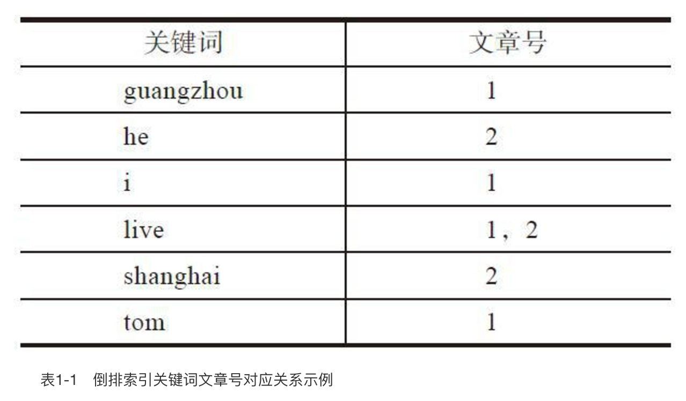
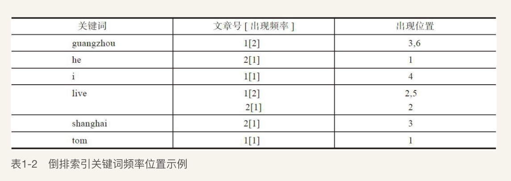

Lucene 简介
Lucene是Apache软件基金会中一个开放源代码的全文搜索引擎工具包，是一个全文搜索引擎的架构，提供了完整的查询引擎和索引引擎，部分文本分析引擎。Lucene的目的是为软件开发人员提供一个简单易用的工具包，以方便在目标系统中实现全文检索的功能，或者是以此为基础建立起完整的全文搜索引擎。
Lucene最初是由Doug Cutting所撰写的，是一位资深全文索引/搜索专家，曾经是V-Twin搜索引擎的主要开发者，后来在Excite担任高级系统架构设计师，目前从事于一些Internet底层架构的研究。
Lucene 采用倒排索引
倒排索引源于实际应用中需要根据属性的值来查找记录。
这种索引表中的每一项都包括一个属性值和具有该属性值的各记录的地址。由于不是由记录来确定属性值，而是由属性值来确定记录的位置，因而称为倒排索引（inverted index）。带有倒排索引的文件我们称为倒排索引文件，简称倒排文件（inverted file）。
Lucene 如何构建倒排索引
1.获取关键词
由于倒排序是根据关键字索引来定位记录的，所以要先获取关键词。比如一篇文章，也就是一串字符串，要获取所有的分词（关键字），如果是英文字符串也就是所有单词，中文则依赖中文分词器来获取所有词语，然而不管英文还是中文有些词是无意义的比如“is”，“in”，“的”等等过滤掉，标点符号过滤掉，大小写统一，等等经过一系列的过滤筛选后得到分词，也就是我们的关键字。
例子：
假设有两篇文章1和文章2：
文章1的内容为：Tom lives in Guangzhou，I live in Guangzhou too.
文章2的内容为：He once lived in Shanghai.
在Lucene中以上措施由Analyzer类完成分词处理，结果如下：
文章1的所有关键词为：[tom][live][guangzhou][i][live][guangzhou]
文章2的所有关键词为：[he][live][shanghai]
2.建立倒排索引
有了关键词后，我们就可以建立倒排索引了。上面的对应关系是：“文章号”对“文章中所有关键词”。倒排索引把这个关系倒过来，变成：“关键词”对“拥有该关键词的所有文章号”。

通常仅知道关键词在哪些文章中出现还不够，我们还需要知道关键词在文章中出现的次数和位置，加上位置与出现次数后如下：

以上就是Lucene索引结构中最核心的部分。我们注意到关键字是按字符顺序排列的（Lucene没有使用B树结构），因此Lucene可以用二元搜索算法快速定位关键词。
3.实现倒排索引
实现时，Lucene将上面三列分别作为词典文件（Term Dictionary）、频率文件（frequencies）、位置文件（positions）保存。其中词典文件不仅保存了每个关键词，还保留了指向频率文件和位置文件的指针，通过指针可以找到该关键字的频率信息和位置信息。
Lucene中使用了field的概念，用于表达信息所在位置（如标题中、文章中、URL中），在建索引中，该field信息也记录在词典文件中，每个关键词都有一个field信息，因为每个关键字一定属于一个或多个field。
4.压缩算法
为了减小索引文件的大小，Lucene对索引还使用了压缩技术。
首先，对词典文件中的关键词进行了压缩，关键词压缩为<前缀长度，后缀>，例如：当前词为“阿拉伯语”，上一个词为“阿拉伯”，那么“阿拉伯语”压缩为<3，语>。
其次大量用到的是对数字的压缩，数字只保存与上一个值的差值（这样可以减少数字的长度，进而减少保存该数字需要的字节数）。例如当前文章号是16389（不压缩要用3个字节保存），上一文章号是16382，压缩后保存7（只用一个字节）。
5.查询
假设要查询单词“live”，Lucene先对词典二元查找、找到该词，通过指向频率文件的指针读出所有文章号，然后返回结果。词典通常非常小，因而，整个过程的时间是毫秒级的。
而用普通的顺序匹配算法，不建索引，而是对所有文章的内容进行字符串匹配，这个过程将会相当缓慢，当文章数目很大时，时间往往是无法忍受的。